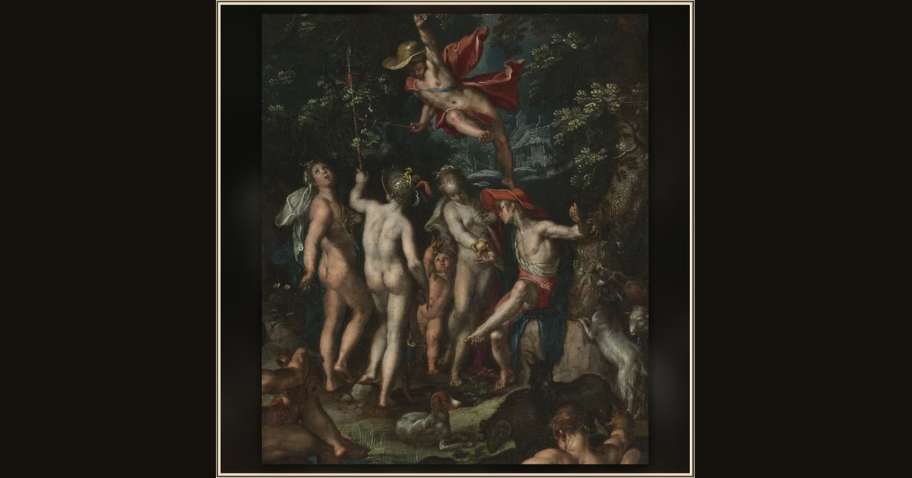

The Judgment of Paris
Joachim Anthonisz Wtewael (Dutch, 1566–1638) · 1602 · cma
Paris sits before the three goddesses in the scene of their judgment. Helen laments the beauty contest whose outcome brought her suffering (676–678). Explore its place in Euripides's Plays, Helen, line 691.